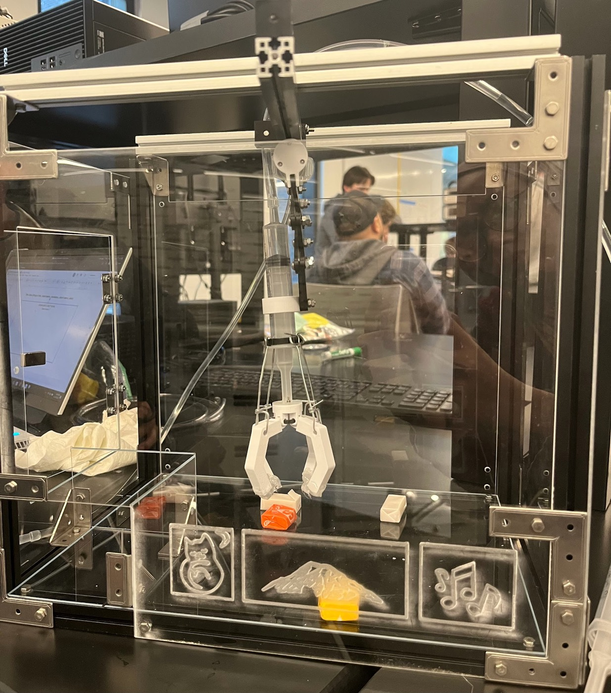
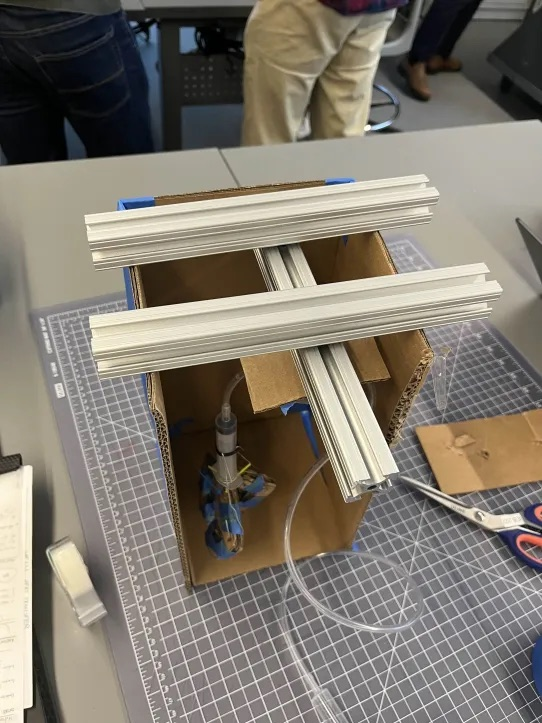
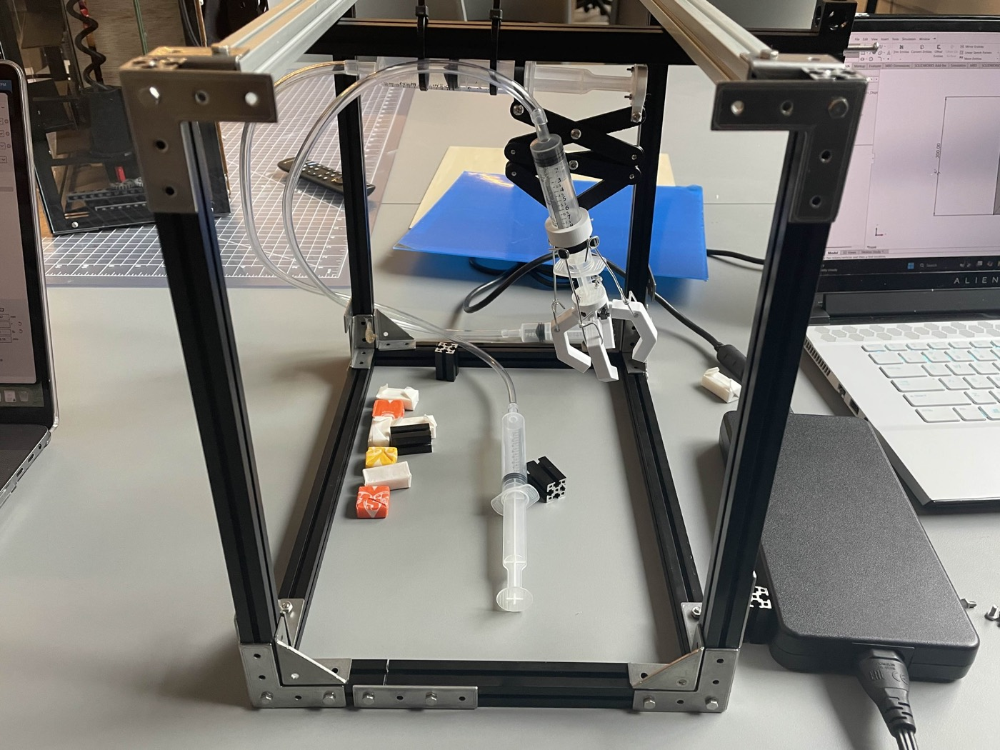
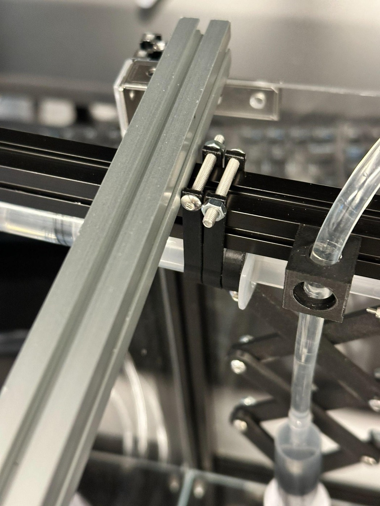
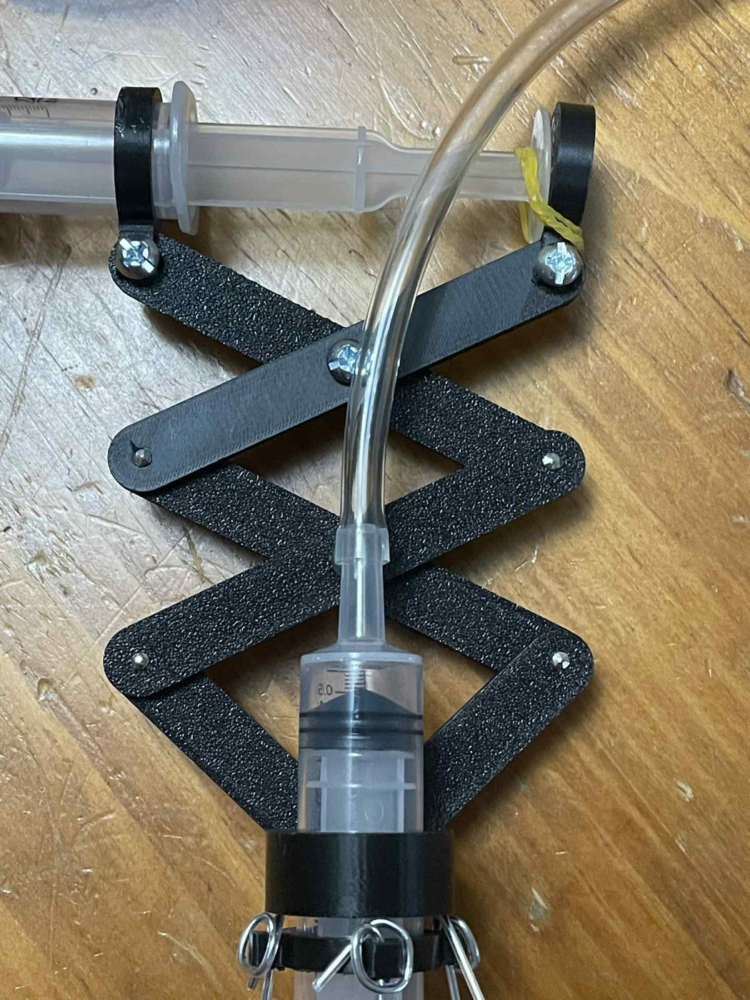
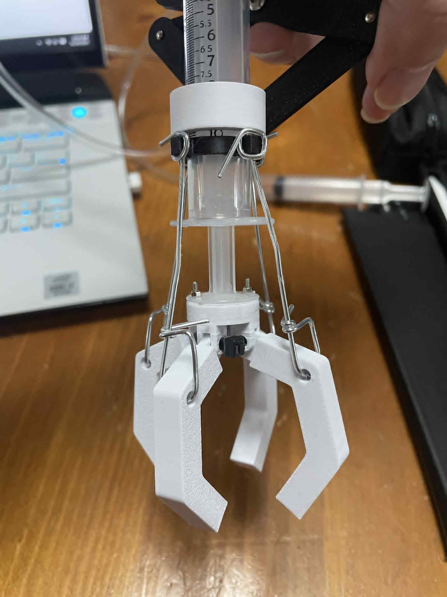
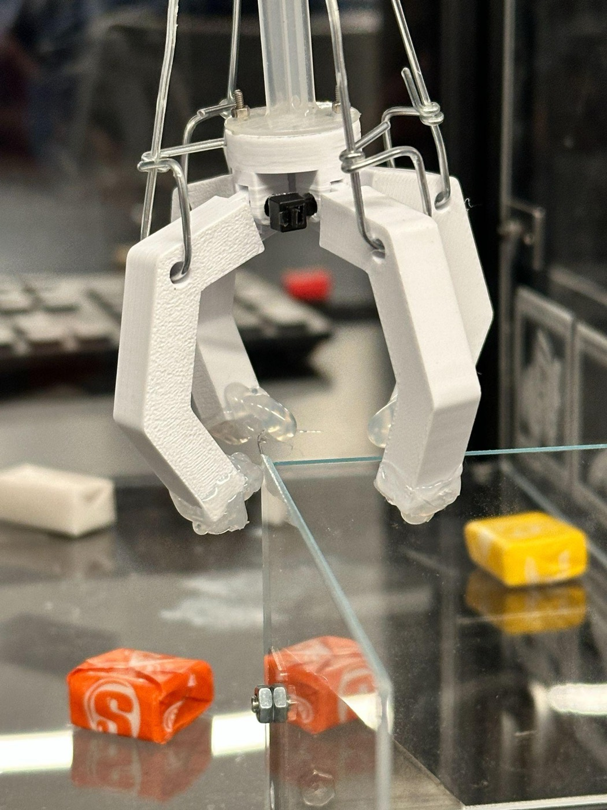

Reimagined Candy Bowl: Mini Claw Machine
A desk-sized claw machine for a UW graduate academic counselor: a 2-axis gantry positions a claw driven by water-filled syringes, built for $127 in parts.
- My role
- Designed and built the 2-axis gantry that positions the claw; team communicator
- Team
- 3 mechanical engineering students
- Client
- Graduate academic counselor, UW Mechanical Engineering
- Dates
- Sep – Dec 2025 · UW ME 493 design studio
- Tools
- SolidWorks, 3D printing, laser cutting, aluminum extrusion, syringe hydraulics


- $127in parts, under the $150 budget
- ~3 lblight enough to carry to career fairs (limit 5 lb)
- 11 / 15testers got candy by their third try
- ~2 minaverage play time (target 2–3 min)
The problem
A graduate academic counselor in UW Mechanical Engineering wanted more students to stop by her office and her career-fair table. A candy bowl sits on most counselors' desks and goes unnoticed. The brief was to reimagine it as something students would want to play with.
Her requirements: fit on a desk in roughly a 12 in cube, weigh under 5 lb so she could carry it to recruiting fairs, reflect her interests (cats, nature, and music), be reliable and easy to refill, and cost under $150. We added targets for the experience itself: a 2–3 minute interaction, and a difficulty tuned so about 80% of users win on their third try.
My role
I owned the claw positioning system, the 2-axis gantry that carries the claw over the candy:
- Came up with the sliding-rail concept and proved it on the team's cardboard 0th prototype.
- Modeled printable rails, T-nuts, and the gantry assembly in CAD. When the printed parts fell short, the team moved the gantry to MakerBeam (below).
- Laser-cut and assembled the enclosure with the team.
I was also the team's communicator, and I drafted the portability and size requirements.
Approach
1. Concepts
We brainstormed around the subfunctions of a candy bowl (hold, separate, and dispense one treat; take user input; stay stable) and brought three concepts to a preliminary design review: a rotating dispenser, a claw machine, and a multi-candy push dispenser. We screened them on feasibility, technical readiness, and how interactive and attractive they were. The claw machine won on interactivity and on fitting the client's cat theme, and a quick cardboard prototype showed a syringe-driven claw really could grab candy.
2. The gantry (my subsystem)
The first gantry slid the claw on T-nuts inside slotted aluminum rail, which worked well on the cardboard prototype. To save weight, I redesigned the 80/20-style rail and T-nuts for 3D printing, but the printed T-nuts came out too small and brittle to hold. The team moved the frame and gantry to MakerBeam, a smaller aluminum extrusion. It was lighter, cheaper, and took less space, and its slots capture hex-head bolts so they can't spin during assembly. The same slots hold the acrylic walls, so the frame and enclosure became one structure.






3. Claw and lift
A 3D-printed claw hangs from a scissor lift, and pairs of syringes connected by tubing drive both motions. With air in the lines, the lift didn't have enough force to raise the arm, so we switched to water for true hydraulics. The scissor pivots use a double-nut (jam nut) arrangement so they turn smoothly without the fasteners backing out.






4. Enclosure and theme
Laser-cut acrylic walls keep the mechanism visible, with engraved cat, mountain, and music-note panels for the client's themes and a plywood forest backdrop. A magnet-latched side door makes refilling easy, and winners collect their candy from a small chute in one corner.
5. User testing
We ran live tests with 15 users. Eleven retrieved a candy by their third attempt, with an average interaction time of about 2 minutes. Ten of the 15 described it as fun, and more than 20 passing students commented on the machine.
Results
| Requirement | Target | Result |
|---|---|---|
| Cost | < $150 | $126.70 |
| Weight (no candy) | < 5 lb | ~3 lb |
| Footprint | ~12 × 12 × 12 in | 12 × 12.5 × 12.8 in |
| Play time | 2–3 min | ~2 min average |
| Win by the third try | ~80% of users | 73% (11 of 15) |
| Draws attention | 50% of students comment | Met: 10 of 15 testers called it fun; 20+ passersby commented |
Limitations and next steps: screw heads on the frame blocked part of the gantry's X travel, the claw needed very precise positioning, and candy occasionally stuck in the claw on release. Testers also found it awkward to work two syringes at once. The next version would use a slightly larger box for more vertical travel, claw wires cut to identical lengths, and a mount that turns the syringes into a two-handed controller.
Gallery


Full report
-
Executive summary
By Hoang (Long) Dinh, Nur Sofi Musfirah Che Sopa, and Kit Nguyen.
-
Final presentation
By Hoang (Long) Dinh, Nur Sofi Musfirah Che Sopa, and Kit Nguyen. My sections of the project were the gantry and the portability and size requirements.
Skills used
- Mechanism design
- SolidWorks CAD
- Design for 3D printing
- Laser cutting
- Aluminum extrusion framing
- Syringe hydraulics
- Rapid prototyping
- User testing
- Low-cost design
- Client requirements